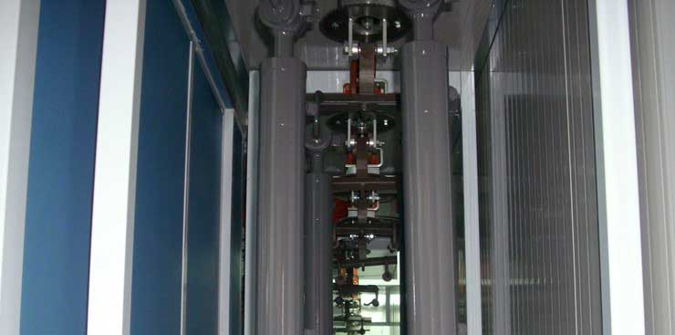

01 / Verkauf
Planen.
Neue Lackier- und Trocknungsanlagen, Modernisierung und komplette Gewerke aus einer Hand.
Mehr erfahren
Verkauf, Montage und Service für Lackieranlagen, die jeden Arbeitstag zuverlässig mittragen.
Eine Lackieranlage ist nur so gut wie die Planung, die Montage und der Service dahinter.
Von der ersten Idee bis zum laufenden Betrieb verbinden wir Technik, Erfahrung und ein klares Verständnis für Ihren Arbeitsalltag.
Neue Lackier- und Trocknungsanlagen, Modernisierung und komplette Gewerke aus einer Hand.
Mehr erfahren
Erfahrene Techniker bringen Neu- und Gebrauchtanlagen sicher an ihren Platz.
Mehr erfahren
Wartung, Reparatur, Ersatzteile und Filterservice für planbare Betriebszeiten.
Mehr erfahren Technik mit Perspektive
Technik mit PerspektiveAls Generalimporteur von NOVA VERTA aus Arezzo liefern wir Originaltechnik und begleiten sie mit deutscher Planung, fachgerechter Montage und schneller Unterstützung.
Anlagen ansehenUnsere Firmenzentrale liegt im Herzen Deutschlands. Von dort sind Fachkräfte und Servicefahrzeuge schnell bei Ihnen.